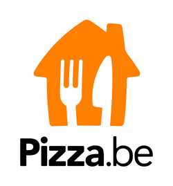

Lamskoteletten
op z'n provençaals
Biefstuk(220g-240g)
sla en frietjes
Gegrilde rundsribstuk(220g - 240g)
met gebakken groenten
Gegrilde kalfslapje
penne, seizoensgroenten en aardappelen
Gepaneerde kipfilet
sla en frietjes
Gegrilde kipfilet
penne, seizoensgroenten en aardappelen
Gegratineerde kalfslapje
met mozzarella en parmezaan
penne met champignonroom
Gegratineerde kipfilet
met mozzarella en parmezaan
penne met champignonroom
Mixed grillade van bovenstaande vlees naar keuze
met saus en assortiment naar keuze
Saus naar keuze: archiduc, peper, béarnaise, groene curry of verse tomaten.
Gegrilde Zalmfilet
kruidensaus, aardappelpuree en groenten
Tongrolletjes op Oostendse wijze
bisque saus, grijze garnalen en aardappelpuree
Kabeljauwhaasje
witte botersaus, aardappelpuree en spinazie
Gebakken zalm
Bearnaisesaus, aardappelpuree en fijne groentjes
Mixt Grillade van bovenstaande vis naar keuze
met saus en assortiment naar keuze
Keuze uit: zonder bijgerecht, aardappelpuree, seizoensgroenten, frietjes, rijst met groentjes en meer.
Spaghetti Bolognaise
Spaghetti met zeevruchten
Pennes 4 Kazen
Penne met kip en champignonsaus
Penne met kip en currysaus
Penne met scampi's en currysaus
Tagliatelles scampi's met saus van de chef
Tagliatelles met zalm
Lasagna van het huis
De gerechten kunnen worden gegratineerd op aanvraag
Ravioli met zalm
Ravioli met scampi's
Ravioli met ricotta van spinazie en parmezaan
Ravioli met zeevruchten
Avocado
Sla, grijze garnalen en avocado
Pecheur
Sla, tonijn, perzik, aardappelen en ei
Tomaat garnaal
Sla, tomaat en grijze garnalen
Caesar
Sla, gegrilde kip, crouton, ei en parmezaan
Bisque van garnalen
CalamariFritti met tartaarsaus
Scampi's met room, look en verse tomaten
Scampi's met look, citroen en peterselie
Scampi's diabolique
Huisgemaakte garnaalkroketjes
Duo van huisgemaakte garnaal- en kaaskroketjes
Warme geitenkaas op toast met noten, rozijnen en honing
Choladefondant
Met vanille-ijs en chocoladesaus
Gebraden Ananas
Geparfumeerd met gember, kaneel, mangotartaat en vanilla-ijs
Appel in de oven
Met speculaas, karamel en vanilla-ijs
Creme Brulee
met vanille van madagaskar
Italiaanse tiramisutaart
Duo van chocolademousse met hazelnoot en slagroom
Milkshake met vanille-ijs
Aardbei, avocado of Mango met banaan en melk
Smoothies met biologisch yoghurt
aardbei, banaan en Sinaasappelsap of appelsap
Pepsi, Pepsi Max
7up, Tropico
Orangina
Oasis
Schweppes
Gini
Ice Tea
Glinter
Lychee, aardbei, perzik, blueberry
Spa
San Pellegrino
Klik op de logo om te bestellen